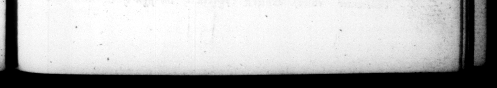

tia mero, tantum flammæ e micuiſſet, ut ſupergreſſa fatti—— cempli ad cælum uſque rretur: _— olim umnino Magno- Alexandro apud eaſdem aras ſacrificanti, ſimile proveniſſet oſtentum. At. etiam ſequenti nocte ſtatim videre viſus eſt filium mortali ſpecie ampliorem, cum fulmine & ſceptro, exuviiſque Jovis Opt. Max. ac radiata corona ſuper laureatum currum, bis ſenis equis candore eximio trahentibus. Infans adhuc, ut ſcriptuni apud C. Druſum exſtat, repolitus veſpere in cunis à nutriculag loco plano, poſtera luce non comparuit: & diu quæſitus, tan dem in a'tiſſima rurri re per tus eſt, jacens contra Salis exortum; Cum primum fari cœpiſſet, in avito ſuburbano obſtrepentes forte ranas ſilere juſſit: atque ex eo negantur ihi tane coaxare, Ad quartum lapidem Campanz viz, in nemore prandenti, ex improviſo aquila panem ei © manu rapuit: & cum altiſſime volaſſet, rurſus ex improviſo leniter delapſa reddidit. Q. Catulus poſt dedicatum Capitolium, duabhus continuis noctibus ſomniavit: prima, Jovem Opt. Max. præ textatis compluribus circum aram ludentibus, unum ſecreviſſe: atq; in ejus ſinum ſignum Reip. quod manu geſtaret, repoſuiſſe, at in ſequenti, animadvertiſſe ſe in gremio Capitolini Jovis eundem puerum: quem cum detrahi juſliſſet, prohibuum mMncu Dei, tanquam is ad rutelam Reip. educaretur. Ac die prox imo obvium ſibi Auguſtum, cum incognitum alias haberet, non fine admiratione contuitus, ſimillimum dixit puero de quo ſomniaſſet. Quid am prius ſomnium Catuli aliter expomm; quaſi Jupiter complartp. Oc TA v. AUGUST. \ bout his ſon, he received from the prieſts an anſwer to the ſame purpoſe, bet ut upon poteri ng wine on the altar, ſo proargious.e flame burſt out, that it a rope the temple, and reach d up to th Heavens, which had never happened to any one. but Alexander the greats upon his 73 4t the ſame alters. And the night 55 ſont under a more than human appearance, with thunder and a ſcepire, and the other habil: ments of Fupiter and 4 . crown on, ſet off with rays, mounted upon a cllariot deckt with laurel, drawn by ſex neilk-wohite horſes. HH be was an infant, as C. Druſus relates, being laid in his cradle by bis nurſe, and in a lim place, the next day he was not to be found, and after he bad been ſought for a long lime, he was at laſt diſcovered upon a very high taper, Hing with his face to the eaſt. When he fir begun to ſpeak, he ordered the frogs that made a troubleſome, noiſe, un an eltate belonting the family nigh the town, to be filent. ; and they tell you the fregs never croaked there ſince. As be was dining in a grove about four miles from Rome, in the ro id 4 Campania, an eagle ſud lenly ſnatch'd a piece of bread” out of his hand, and Ryng'4 pred. gious height with it, came unexpettedly dvb again by an eaſy motion, and return'd it him, Q. Catulus for two nights ſuc. ceſſively after jus dedication of the capitol, dreamt, the firſt night, that Fubiter aut of ſeveral boys that were p!ryiny about his altar, picked ane of them. into whoſe boſum he put the publick ſral of the common-wealth, which be had in his hand; and the mn of Fug Jaw the ſame boy in the boſom of Fupiter Capitolinus, whom he ordered to be taten down, but was forbid by the God, by reaſon he was educated for. the preſervation of the common-wealth, And the next day meeting with Auguſtus, whom "till that hour be had not the leaſt krowledge of, heholding him with ad. miration, he ſaid he was very like the boy, he had dreamt of. Some give 4 different account of Catu'us 5 firſt dream, as if Fupiter, upon ſeveral boys petirs. oning him for a guard:an, had point d to one amongſt them, to whom they were to prefer their requeſts ; and put. LUS 113 er he dreamt be ſaw bis — ñ — — — - —_— y—— ——ꝛ—x B —
